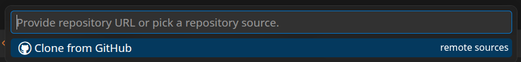
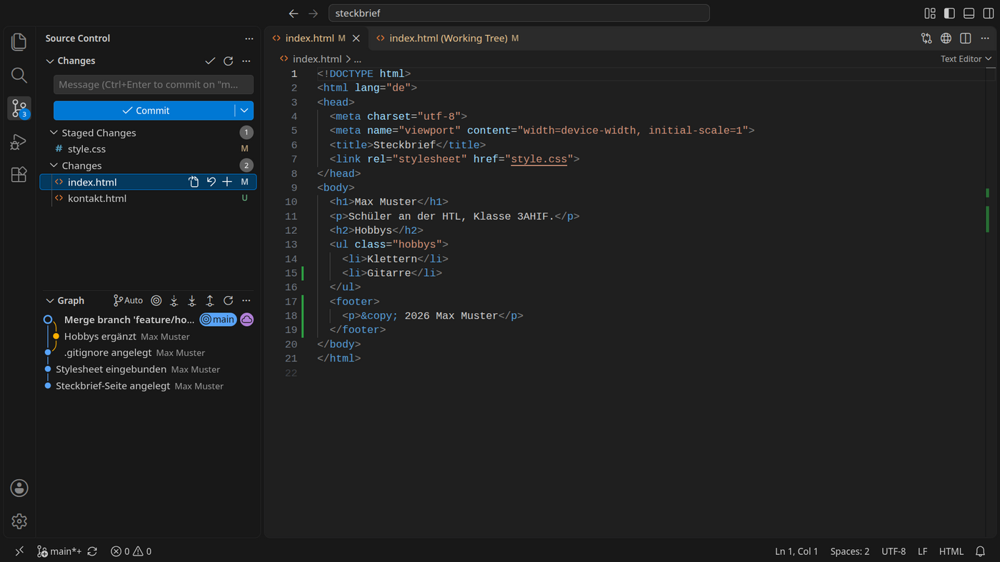
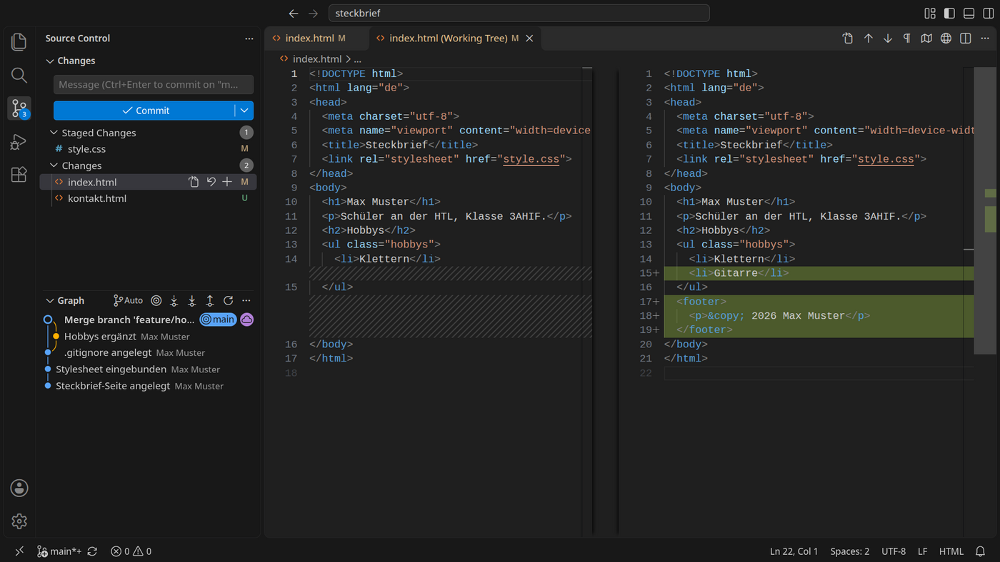
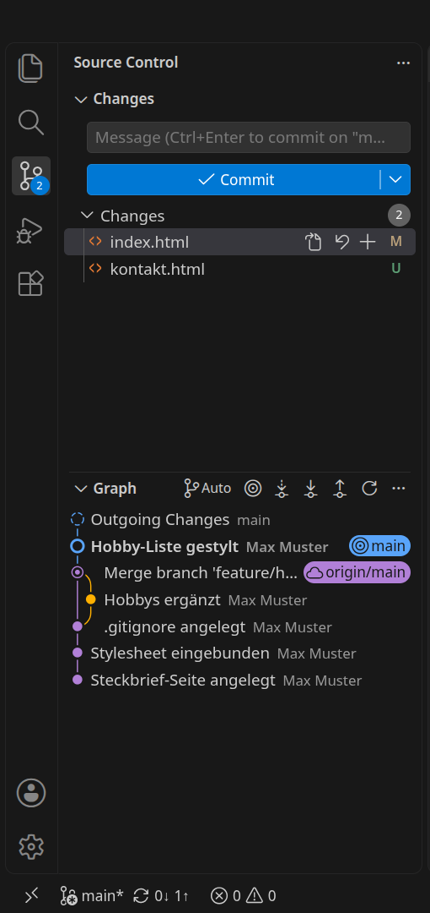
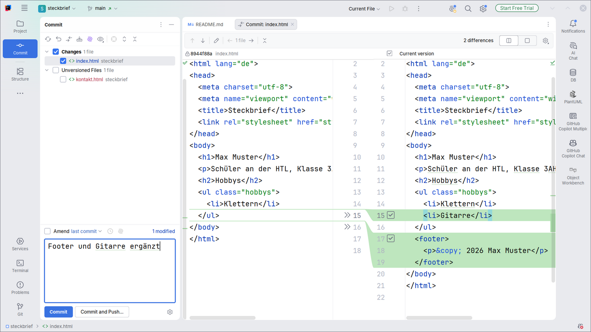
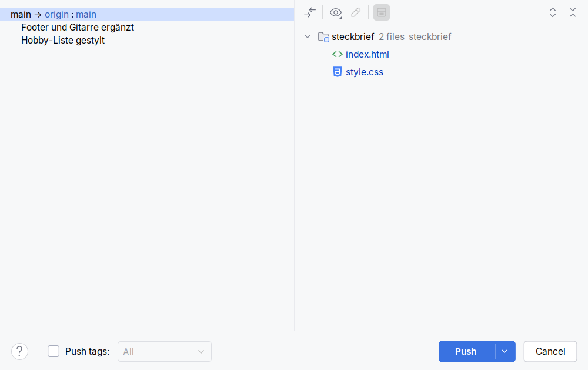
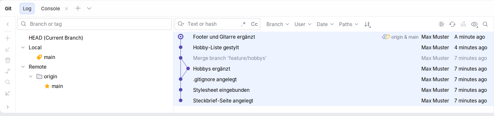
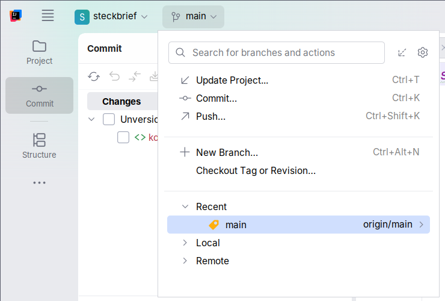

Lektion 1.4 — Teil 1: Git-Grundlagen & Werkzeuge
Git in VS Code und IntelliJ
Lernziele
- Ein GitHub-Repository direkt aus VS Code und aus IntelliJ IDEA klonen
- Änderungen in der IDE ansehen, vormerken, committen, pushen und pullen
- Die Farben und Symbole für Dateizustände in beiden IDEs deuten
- Branch und Commit-Historie in der IDE ablesen
- Jede IDE-Aktion dem passenden Git-Befehl zuordnen
1 — Die IDE verwendet dein Git
VS Code und IntelliJ haben kein eigenes Git eingebaut: Sie rufen im Hintergrund das Git auf,
das du in Lektion 1.2 installiert hast, und verwenden auch dessen Einstellungen
(user.name, user.email). Jede Schaltfläche entspricht also einem Befehl, den du schon kennst.
Deshalb gilt:
- Was du in der IDE tust, siehst du auch mit
git statusundgit logim Terminal — und umgekehrt. - Wenn die IDE einmal eine unverständliche Meldung zeigt, hilft ein Blick ins Terminal.
- Öffne in der IDE immer den Repository-Ordner (den mit
.gitdarin), nicht einen Ordner darüber.
Beide IDEs haben ein eingebautes Terminal: VS Code Strg+ö (US-Tastatur Ctrl+`), IntelliJ Alt+F12. Es startet direkt im Projektordner.
2 — VS Code: Klonen und die Ansicht „Source Control“
Klonen
- Befehlspalette öffnen: Strg+Shift+P (macOS ⌘+⇧+P).
- Git: Clone eingeben → Clone from GitHub (beim ersten Mal meldest du dich im Browser bei GitHub an) oder die URL einfügen.
- Zielordner wählen, danach Open klicken.

Die Ansicht Source Control
Über das Verzweigungssymbol in der linken Leiste oder Strg+Shift+G öffnest du die Git-Ansicht. Sie zeigt den Inhalt von git status grafisch:
| Element | Bedeutung | Git-Befehl |
|---|---|---|
| Gruppe Changes | geänderte, nicht vorgemerkte Dateien | git status |
| Gruppe Staged Changes | vorgemerkte Dateien | git status |
| Buchstabe U / M / D / A | untracked / modified / deleted / added (neu vorgemerkt) | git status -s |
| Klick auf eine Datei | Vergleich alt/neu nebeneinander | git diff |
| + neben der Datei | Stage Changes | git add datei |
| − neben der Datei (in Staged Changes) | Unstage Changes | git restore --staged datei |
| Pfeil zurück neben der Datei | Discard Changes — Änderung verwerfen! | git restore datei |
| Textfeld + Commit (Strg+Enter) | Commit mit dieser Message | git commit -m "…" |
| Sync Changes | erst pullen, dann pushen | git pull + git push |
| Menü … → Pull, Push, Clone, Branch, Stash … | weitere Befehle | — |


Ist nichts vorgemerkt und du klickst auf Commit, fragt VS Code, ob alle Änderungen vorgemerkt und committet werden sollen. Mit „Always“ passiert das künftig ohne Rückfrage — dann landen leicht Dateien im Commit, die du nicht wolltest. Besser gezielt mit + vormerken.
Weitere Anzeigen
- Statusleiste unten links: der aktuelle Branch (z. B.
main), daneben Zähler wie1↓ 2↑: 1 Commit am Server noch nicht geholt, 2 lokale Commits noch nicht gepusht. - Farbige Balken im Editor-Rand: grün = neue Zeilen, blau = geänderte Zeilen, rotes Dreieck = gelöschte Zeilen seit dem letzten Commit.
- Graph im unteren Teil der Source-Control-Ansicht: die Commit-Historie als Grafik (wie
git log --graph). - Timeline im Explorer: die Commits, die die gerade geöffnete Datei verändert haben.

git blame).
GitHub Pull Requests erlaubt es, Pull Requests (Lektion 2.4) direkt in VS Code zu prüfen.
3 — IntelliJ IDEA: Klonen und das Commit-Fenster
Klonen
- Im Willkommensbildschirm Clone Repository oder im Menü File → New → Project from Version Control.
- Links GitHub wählen, Log In via GitHub — die Anmeldung erfolgt im Browser. Danach erscheinen deine Repositories in einer Liste. Alternativ links Repository URL und die URL einfügen.
- Zielordner prüfen, Clone, danach das Projekt öffnen und vertrauen („Trust Project“).
Den GitHub-Account kannst du auch später unter Settings → Version Control → GitHub hinzufügen. Ein bestehendes Projekt ohne Git machst du mit VCS → Create Git Repository zu einem Repository (entspricht git init).
Das Commit-Fenster
Mit Strg+K (macOS ⌘+K) oder dem Symbol Commit in der linken Leiste (Alt+0) öffnest du das Commit-Fenster:
- Changes: alle geänderten Dateien mit Häkchen. Nur angehakte Dateien kommen in den Commit — die Häkchen ersetzen hier die Staging Area.
- Unversioned Files: neue Dateien, die Git noch nicht verfolgt. Anhaken =
git add. - Doppelklick auf eine Datei (oder Strg+D): Vergleich alt/neu.
- Darunter das Feld für die Commit-Message und die Schaltflächen Commit sowie Commit and Push….

| Farbe des Dateinamens | Bedeutung |
|---|---|
| rot | unversioned (untracked) |
| grün | neu hinzugefügt, noch nicht committet |
| blau | geändert seit dem letzten Commit |
| grau / oliv | von .gitignore ignoriert |
| normal | unverändert |
Push, Pull, Historie
| Aktion | Tastenkürzel (Win/Linux · macOS) | Git-Befehl |
|---|---|---|
| Push… — zeigt vorher die Liste der zu pushenden Commits | Strg+Shift+K · ⌘+⇧+K | git push |
| Update Project — holt und übernimmt neue Commits | Strg+T · ⌘+T | git pull |
| Werkzeugfenster Git, Reiter Log: Commit-Graph, Suche, Diff je Commit | Alt+9 · ⌘+9 | git log --graph |
| Rechtsklick in den Editor-Rand → Annotate with Git Blame | — | git blame |
| Rechtsklick auf Datei → Git → Rollback | Strg+Alt+Z · ⌘+⌥+Z | git restore datei |


Den aktuellen Branch zeigt IntelliJ oben links in der Titelleiste neben dem Projektnamen. Ein Klick darauf öffnet das Branch-Menü (neuer Branch, wechseln, mergen — Lektion 2.1).

Unabhängig von Git merkt sich IntelliJ jede Änderung der letzten Tage: Rechtsklick auf Datei → Local History → Show History. Das rettet auch Änderungen, die nie committet wurden.
IntelliJ speichert Projekteinstellungen im Ordner .idea. In Schulprojekten trägst du ihn am
einfachsten in die .gitignore ein (Lektion 1.3), damit sich die Einstellungen verschiedener
Rechner nicht gegenseitig überschreiben.
4 — Gegenüberstellung
| Aufgabe | Terminal | VS Code | IntelliJ IDEA |
|---|---|---|---|
| Klonen | git clone url | Befehlspalette → Git: Clone | Clone Repository / Project from Version Control |
| Status ansehen | git status | Source Control (Strg+Shift+G) | Commit-Fenster (Alt+0) |
| Änderung ansehen | git diff | Klick auf Datei | Doppelklick / Strg+D |
| Vormerken | git add | + | Häkchen |
| Committen | git commit -m | Message + Strg+Enter | Message + Commit (Strg+K) |
| Pushen | git push | Sync Changes / … → Push | Strg+Shift+K |
| Pullen | git pull | Sync Changes / … → Pull | Strg+T |
| Historie | git log --oneline --graph | Graph / Timeline | Git-Fenster → Log (Alt+9) |
| Branch anzeigen/wechseln | git branch, git switch | Statusleiste unten links | Titelleiste oben links |
Für das tägliche Vormerken, Committen und Ansehen von Diffs ist die IDE bequem und übersichtlich. Das Terminal bleibt wichtig: Es zeigt ausführliche Meldungen, funktioniert überall (auch auf Servern ohne grafische Oberfläche) und alle Anleitungen im Internet verwenden die Befehle. Wer beides kann, versteht, was die IDE tut.
Projektschritt
Eine Änderung komplett in der IDE
- Öffne den Ordner
steckbriefin VS Code (File → Open Folder) oder IntelliJ (File → Open). - Ergänze in
index.htmleinen Footer und beobachte die farbigen Markierungen im Editor-Rand bzw. die Dateifarbe.
<footer>
<p>© 2026 Max Muster</p>
</footer>- Sieh dir den Diff in der IDE an, merke die Datei vor (VS Code: +, IntelliJ: Häkchen) und committe mit der Message „Footer ergänzt“.
- Beobachte vor dem Push die Anzeige
0↓ 1↑(VS Code) bzw. die Commit-Liste im Push-Dialog (IntelliJ). Pushe dann. - Kontrolliere im Terminal mit
git log --onelineund auf GitHub, dass der Commit angekommen ist.
Häufige Fehler
VS Code zeigt „The folder currently open doesn't have a git repository“ oder IntelliJ bietet keine Git-Funktionen an — geöffnet wurde der Ordner über dem Repository oder ein Unterordner einer anderen Struktur.
Genau den Ordner öffnen, der .git enthält (bei einem Klon: der Ordner mit dem Repository-Namen).
Nach dem Klick auf Commit denkt man, die Arbeit sei „abgegeben“. Auf GitHub fehlt sie aber; VS Code zeigt in der Statusleiste 0↓ 1↑.
Commit speichert nur lokal. Danach Sync Changes bzw. Push (Strg+Shift+K) — oder in IntelliJ gleich Commit and Push….
In IntelliJ wurde galerie.html neu angelegt, die Frage „Add file to Git?“ mit „Cancel“ beantwortet. Die Datei bleibt unter Unversioned Files und fehlt im Commit.
Vor dem Commit die Gruppe Unversioned Files prüfen und benötigte Dateien anhaken (oder Rechtsklick → Git → Add).
Aufgaben
Ändere in index.html zwei Stellen, die nichts miteinander zu tun haben (z. B. Titel und Footer). Committe sie in VS Code als zwei getrennte Commits: Im Diff-Editor kannst du markierte Zeilen per Rechtsklick → Stage Selected Ranges einzeln vormerken. Prüfe das Ergebnis mit git log -p -2.
Ändere eine Datei und verwirf die Änderung in der IDE (VS Code: Discard Changes, IntelliJ: Rollback). Merke danach eine Datei vor und nimm sie wieder aus der Staging Area. Notiere zu jeder Aktion den entsprechenden Git-Befehl.
Klone dein Repository mit der IDE, die du noch nicht verwendet hast, in einen zweiten Ordner. Ändere etwas, committe und pushe. Hole die Änderung dann in der ersten IDE (Sync bzw. Update Project). Vergleiche die Commit-Graphen beider IDEs.
Beide IDEs protokollieren die Git-Befehle, die sie ausführen: VS Code im Panel Output (Auswahl „Git“), IntelliJ im Git-Werkzeugfenster im Reiter Console. Führe einen Commit und einen Push in der IDE aus und finde die zugehörigen Befehle im Protokoll.
Quiz
5 Fragen · zum Aufklappen klicken
Frage 1 Was macht die Schaltfläche Sync Changes in VS Code?
Frage 2 In IntelliJ ist ein Dateiname rot dargestellt. Was bedeutet das?
Frage 3 VS Code zeigt in der Statusleiste main 0↓ 2↑. Was gilt?
Frage 4 Welche Zuordnungen von IDE-Aktion zu Git-Befehl stimmen?
Mehrere Antworten sind richtig.
git restore datei, nicht git revert (das erzeugt einen Umkehr-Commit).Frage 5 Warum zeigt git log im Terminal die Commits, die du in der IDE erstellt hast?
.git.